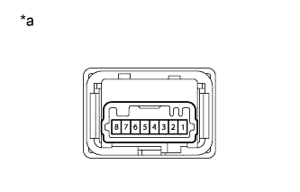

СИСТЕМА КУРСОВОЙ УСТОЙЧИВОСТИ (для моделей с вакуумным усилителем тормозной системы) > Контрольная лампа VSC OFF не загорается |
| 1.ПРОВЕРЬТЕ СИСТЕМУ ПЕРЕДАЧИ ДАННЫХ CAN |
Проверьте, выводятся ли DTC системы передачи данных CAN (для моделей с левосторонним рулевым управлением без системы посадки и запуска Нажмите здесь, для моделей с правосторонним рулевым управлением без системы посадки и запуска Нажмите здесь).
| Результат | Следующий шаг | |
| Коды DTC не отображаются | А | |
| код DTC выдается | для моделей с левосторонним рулевым управлением без системы посадки и запуска | B |
| Код DTC отображается | для моделей с правосторонним рулевым управлением без системы посадки и запуска | C |
|
| ||||
|
| ||||
| А | |
| 2.ПРОВЕРЬТЕ ПЕРЕКЛЮЧАТЕЛЬ VSC OFF |
Снимите выключатель VSC OFF (Нажмите здесь).
|  |
Измерьте сопротивление в соответствии со значениями, приведенными в таблице ниже.
| Контакты для подключения диагностического прибора | Положение переключателя | Заданные условия |
| 6 - 3 | Выключатель не нажат | 10 кОм или более |
| Выключатель нажат | Менее 1 Ом |
| *a | Устройство с неподсоединенным жгутом проводов (выключатель VSC OFF) |
|
| ||||
| OK | |
| 3.ПРОВЕРЬТЕ ЖГУТ ПРОВОДОВ И РАЗЪЕМ (ЭБУ СИСТЕМЫ ПРОТИВОСКОЛЬЖЕНИЯ – ПЕРЕКЛЮЧАТЕЛЬ VSC OFF) |
Отсоедините разъем A6 ЭБУ системы противоскольжения.
Отсоедините разъем G9 выключателя VSC OFF.
Измерьте сопротивление в соответствии со значениями, приведенными в таблице ниже.
| Контакты для подключения диагностического прибора | Условие | Заданные условия |
| A6-30 (CSW) - G9-6 | Всегда | Менее 1 Ом |
| A6-30 (CSW) - масса | Всегда | 10 кОм или более |
| G9-3 - масса | Всегда | Менее 1 Ом |
|
| ||||
| OK | |
| 4.СНИМИТЕ ПОКАЗАНИЯ ПОРТАТИВНОГО ДИАГНОСТИЧЕСКОГО ПРИБОРА (TRC/VSC OFF MODE) |
Выключите зажигание.
Подсоедините портативный диагностический прибор к DLC3.
Установите замок зажигания в положение ON (ВКЛ).
Включите портативный диагностический прибор.
Войдите в следующие меню: Chassis / ABS/VSC/TRC / Data List.
| Информация на дисплее прибора | Измеряемая величина / диапазон измерения | Нормальное состояние | Замечание по диагностике |
| TRC/VSC Off Mode | Режим TRC/VSC OFF/ Normal, TRC OFF или VSC OFF | Normal: Нормальный режим TRC OFF: режим TRC OFF VSC OFF: Режим VSC OFF | - |
Убедитесь, что показание на дисплее изменяется в соответствии с управлением выключателем VSC OFF.
|
| ||||
| OK | ||
| ||